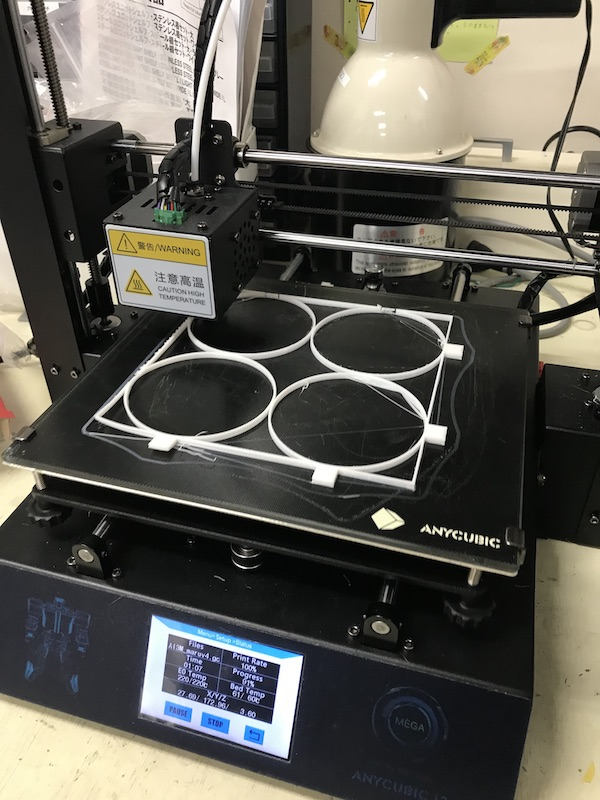
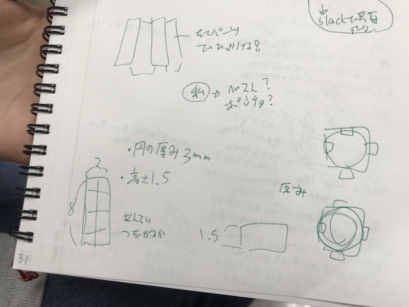
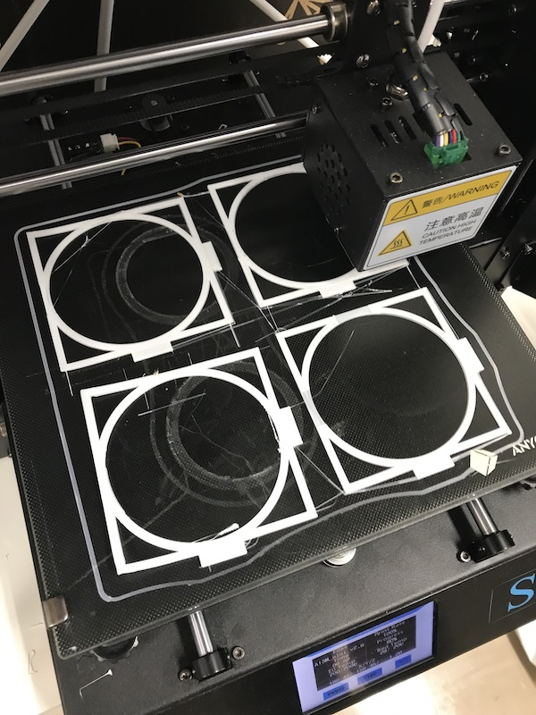
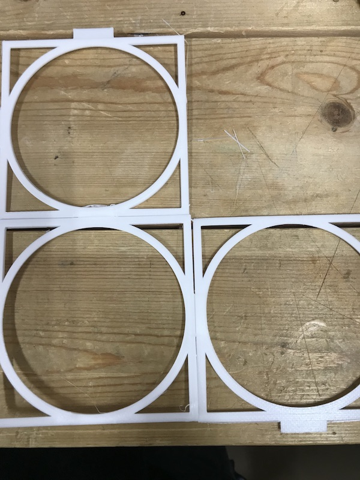
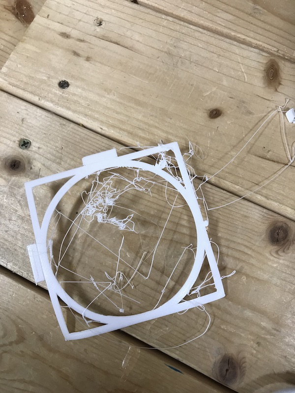
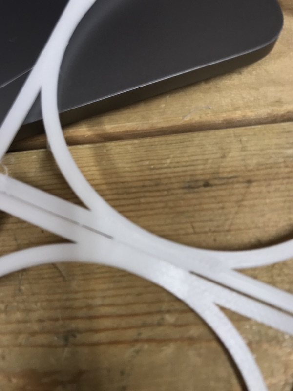

・服のパーツを考え、感温フィラメントで出力した。

・いざ熱を与え形を腕に沿ってカーブを作ろうとしたが、横方向のフィラメントの厚みが足りず
ふにゃふにゃになってしまい、上手くカーブを作ることが出来なかった。（画像は後日）
.パーツ同士の接合部を綺麗に丈夫にするために試行をする必要がある
・横方向の厚みを出し縦方向の厚みは出さないようにする。
・４つの丸の模様一つではなく、１つの丸だけのパーツで出力するといいかも。

・出力時間1:12
ダウンロード
・前回の改善策をもとに、データを作り直した。
・フィラメントはPLA


・薄すぎて出力中にフィラメントが剥がれてしまった。
・剥がれなくても少ししなっている。

・パーツのつなぎ目は綺麗に出来た。

・出力時間1:10
ダウンロード